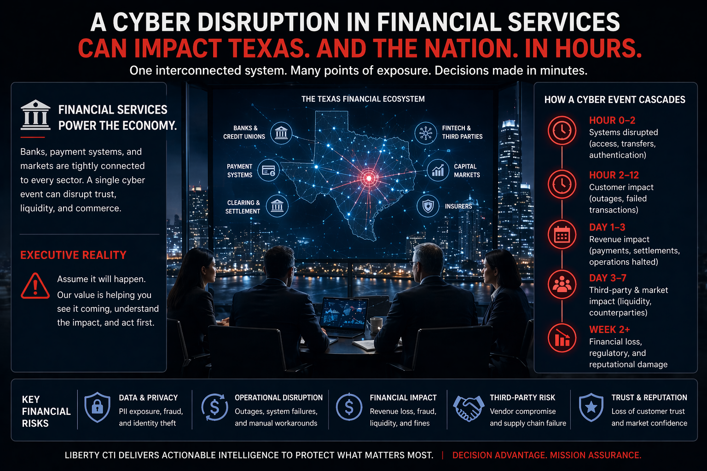

Sector Intelligence
Texas Finance Is Trust Infrastructure Under Strategic Cyber Pressure
Texas finance is trust infrastructure. Banks, credit unions, insurance carriers, fintech vendors, public finance entities, and payment dependencies sit inside a national system where fraud, ransomware, sanctions evasion, and nation-state theft can turn cyber events into liquidity, confidence, and regulatory problems. For financial sector boards and general counsel, the question is whether leadership can show it understood the strategic warning and documented action before disruption forced the decision.

Questions for Leadership
Could your leadership answer these today?
A risk rating does not tell a board what to decide. These questions do. Where the answer is unclear, untested, or undocumented, there is a decision gap.
- Which external dependency could change this decision?If a shared core, payments, or file-transfer vendor goes down, which services and customers are affected at once?
- Who owns escalation?Who decides to suspend a vendor connection or a payment channel, and on what evidence?
- What warning threshold changes posture?A vendor's disclosure, a fraud spike, or an advisory naming a platform you use: which one moves leadership?
- Which assumption has not been tested?That a vendor will tell you soon enough to meet your own notification obligations.
- What must be documented?When leadership learned of a vendor compromise, and what it decided about customers, regulators, and the vendor.
- Has this decision ever been rehearsed?Pausing a payment or customer channel while trust and liquidity are both under pressure.
- What happens if the disruption spreads into another sector?If an energy or healthcare disruption drives claims, payroll, and liquidity demand, can the institution absorb it while impaired itself?
What Adversaries Are Targeting
Crown Jewels of Texas Finance
Financial sector adversaries target operational continuity, customer identity, and payment infrastructure, not just data. The highest-consequence attack does not extract records. It disrupts the systems that settle transactions, sustain liquidity, and preserve public trust.
Liquidity & Payment Rail Continuity
Core banking systems, ACH processing, wire settlement, and card payment infrastructure. A disruption here cascades into every sector that depends on transactions, healthcare claims, payroll, procurement, and public finance.
Customer & Member Identity Systems
Account credentials, authentication infrastructure, and document delivery systems. Compromised customer identity is the entry point for fraud at scale, and Texas's dense consumer base makes it a high-return target environment.
Fintech & Compliance Vendor Ecosystem
Texas-based fintech, compliance, marketing, and file-transfer vendors serving multiple institutions simultaneously. One vendor compromise creates downstream exposure across dozens or hundreds of client institutions, a structural systemic risk that MOVEit and the Marquis incident made concrete. As an illustrative comparison, not a Texas-specific incident: SolarWinds' Orion platform was not just a technical asset but a core business asset, accounting for about 45% of company revenue by SolarWinds' own SEC filing. After the compromise became public, SolarWinds' share price fell more than 20% in the immediate market reaction. A single vendor compromise in a concentrated ecosystem can move markets, not just data.
Appraisal Districts & Municipal Systems
County appraisal districts, municipal treasury systems, and public benefits administration. Ransomware targeting these systems disrupts citizen services and creates citizen data exposure at scale, with recovery measured in weeks, not days.
Anti-Fraud & ATO Detection Infrastructure
Account takeover detection, device fingerprinting, and anomaly monitoring. Social engineering campaigns, now AI-accelerated, target these control layers directly, submitting legitimate-appearing transactions that defeat behavioral baselines.
Notification & Compliance Posture
State (Texas Department of Banking) and federal (bank regulatory body) incident notification obligations create a reportability dimension that becomes an operational burden during incidents, particularly when vendor-driven delays complicate notification timelines. A review of Item 1C cybersecurity disclosures across Texas-headquartered public financial institutions shows a consistent pattern: board oversight structures, CISO reporting lines, and third-party risk programs, described in language that satisfies the disclosure rule. What the rule doesn't require — and what these filings don't show — is whether the board understood a specific threat scenario before it required a decision.
Priority Threat Actors
Who Poses Risk to Texas Finance
Financial sector threats span two intertwined domains, institution compromise and fraud ecosystems, with some overlap between nation-state activity, criminal services, and fraud ecosystems.
Ransomware / Extortion Groups
Financially motivated actors frequently target banking institutions, credit unions, fintech vendors, and shared service providers. The most consequential attacks target recovery infrastructure, backup systems, identity providers, and virtualization platforms, to maximize pressure and deny rapid restoration.
Scattered Spider / BEC Actors
Social engineering can defeat identity architectures built primarily to stop technical exploits. Business email compromise, vishing, and help-desk impersonation are now primary financial attack vectors. AI-accelerated phishing is lowering the skill threshold for these operations.
Lazarus Group
Financial system targeting and cryptocurrency theft to fund regime weapons programs. Texas financial institutions, fintech firms, and cryptocurrency platforms remain exposed to nation-state theft, disruption, and fraud activity, including operations associated with Lazarus.
IRGC-CY / Hydro Kitten
IRGC-linked actors remain a concern for disruptive signaling against U.S. financial infrastructure during periods of U.S.-Iran tension. Texas-based payment processors and regional banks are plausible exposure points.
Incident Record
Texas Finance: What Has Already Happened
The following vignettes are drawn from primary sources, AG filings, breach notifications, regulatory disclosures, and government records. The systemic risk pattern in Texas finance is documented and recurring.
- Aug 2025–Mar 2026AG Filings / Reuters
Marquis Software Solutions Ransomware, Texas-Based Fintech Systemic Risk
Marquis Software Solutions, a Texas-based vendor serving banks and credit unions, disclosed a ransomware attack impacting customer data handled on behalf of client institutions. AG filings describe an exploited firewall vulnerability and a large affected population across multiple downstream financial institutions.
Texas operational impact: Third-party concentration risk in its clearest form. One Texas-based vendor's compromise created delayed detection, downstream fraud exposure, and notification burdens across many client institutions simultaneously.
Attribution: Ransomware (exploited firewall vulnerability per public reporting)
- May 2023 / Aug 2024Multi-Institution
MOVEit Exploitation, Texas Credit Union Long Detection Window
Exploitation of MOVEit file-transfer software impacted multiple Texas financial institutions and credit unions. A Texas credit union's breach notification documented a detection window exceeding one year, illustrating how "edge software" systemic risks persist long after the initial exploitation campaign concludes.
Texas operational impact: Large-scale member and customer exposure; prolonged notification lag creating extended fraud window. The MOVEit exploitation pattern is a template adversaries continue applying to other file-transfer and edge software products.
Attribution: Widely attributed to a ransomware group exploiting MOVEit
- Nov 2023NCUA Report
Credit Union Service Provider Ransomware, 60 Credit Unions Disrupted
NCUA reported that ransomware affecting a major credit union service provider simultaneously disrupted approximately 60 credit unions with prolonged outages. The incident illustrated how shared-provider concentration creates systemic, simultaneous exposure across institutions that believe they are operating independently.
Texas operational impact: Texas has a significant credit union footprint through vendors serving multiple institutions from shared platforms. A single compromise creates multi-institution outage with member service impact, regulatory reporting obligations, and recovery complexity measured in weeks.
Attribution: Ransomware (specific actor not central in NCUA framing)
- Nov 2022–Feb 2023Dallas
Dallas Central Appraisal District Ransomware, Public Finance Disruption
The Dallas Central Appraisal District experienced a ransomware attack resulting in prolonged outage, reported ransom payment, and disruption of public-facing tax and appraisal services. The incident illustrates the vulnerability of public finance systems managing citizen data and tax administration functions.
Texas operational impact: Public-facing system downtime, administrative burden, citizen data exposure risk, and recovery costs. Texas appraisal districts manage property tax data for millions of residents and are operated with public-sector resource constraints that create structural security gaps.
Attribution: Reported as ransomware; attribution reported in media
Liberty CTI Assessment
The Financial Sector Judgment
Liberty CTI assesses with HIGH CONFIDENCE that the Texas financial sector's most important systemic vulnerability is likely third-party vendor concentration, not only direct institution compromise. The Marquis and MOVEit incidents demonstrate a repeatable attack pattern: compromise a shared vendor, create simultaneous exposure across client institutions, and extract or encrypt data before any single institution detects the intrusion. Under prolonged multi-sector outage scenarios, the operational importance of Texas finance rises because payment rails and recovery financing underpin every other sector's ability to reconstitute. This is fundamentally a board and general counsel question, not a purely technical one. A CISO can confirm a control exists. Boards and executive leadership must be able to demonstrate they understood the decision in front of them.
Liberty CTI keeps its judgments on the record and revisits them as evidence changes. See The Track Record.

Could leadership protect trust when payment rails strain?
The Executive Intelligence Baseline establishes which of these questions your leadership can already answer. The Executive Decision Exercise tests the ones it cannot.